36 quadrupèdes refaits comme le loup
Même description que tes créatures actuelles (style « pas bébé »), mais une seule queue, relevée et loin des pattes, des yeux en amande, et chaque créature vérifiée de dos (ni 2 queues, ni queue collée). Sur chaque image : à gauche l'actuel, puis le nouveau de profil, de dos et de face.
- Hydre : 3 essais, il fait un corps debout ou deux dragons collés.
- Renard à trois queues : 3 essais, il fait toujours 5 à 7 queues (renard à neuf queues des légendes).
- Loup : déjà refait (loup 10).
- Renard : regénéré (patte arrière tordue et collerette derrière la tête sur l'ancien essai) : debout sur ses 4 pattes, une seule queue.
- Lion étoilé, Lapin lunaire, Salamandre de feu, Tortue de cristal : regénérés (queue mal placée, enroulée, ou pattes arrière en palmes).
- Kirin : queue de travers redressée dans l'axe du dos (les nouveaux essais devenaient de simples cerfs).
Dis-moi ceux que tu refuses (je les regénère) ; les autres, je les mets dans le jeu avec toute la chaîne (squelette, peau propre, poils en relief).
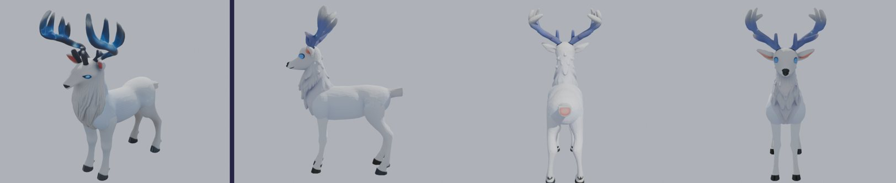
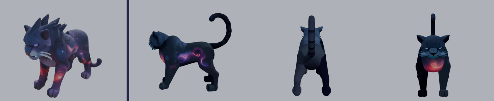
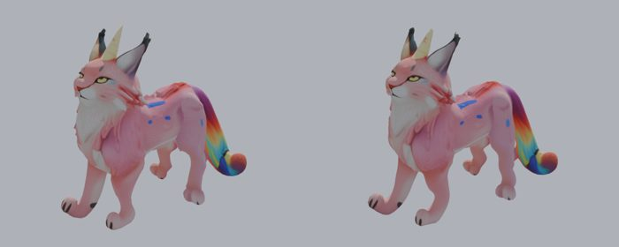
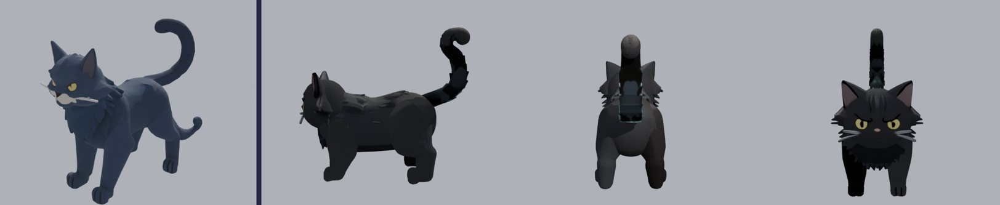
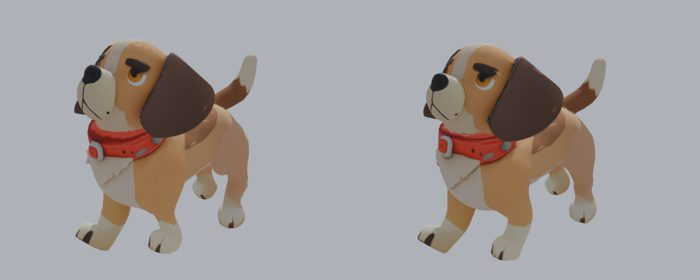
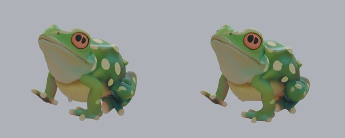
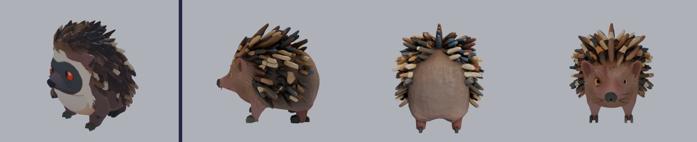
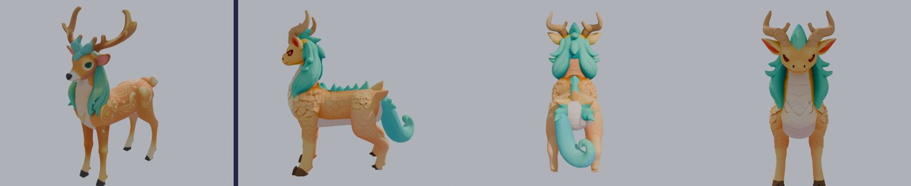

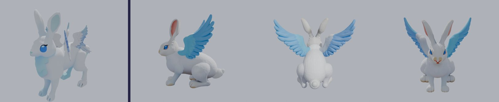
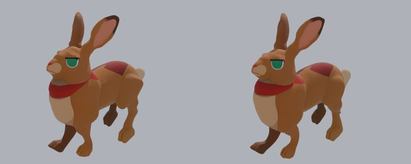
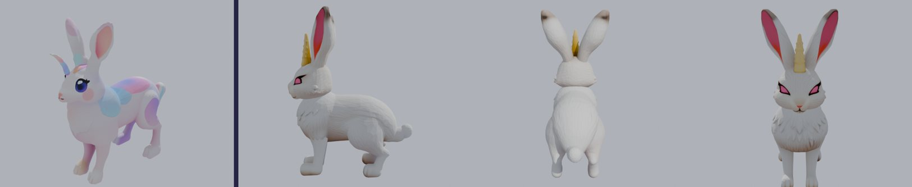
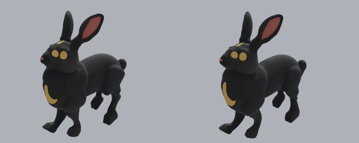
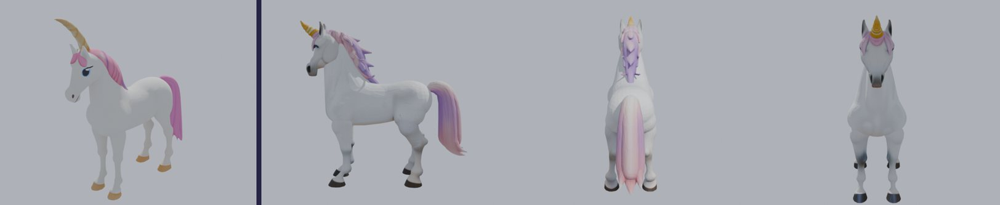
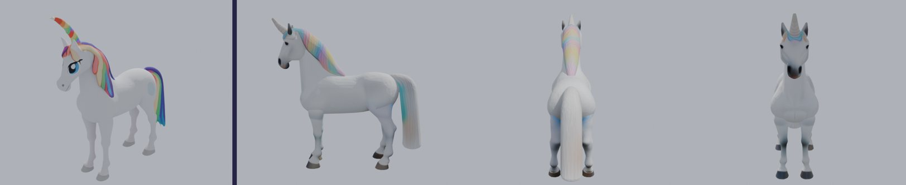
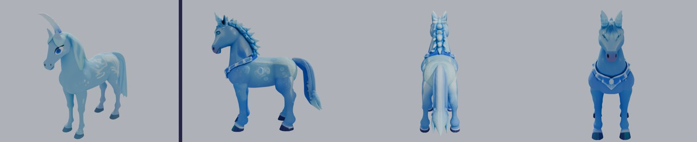
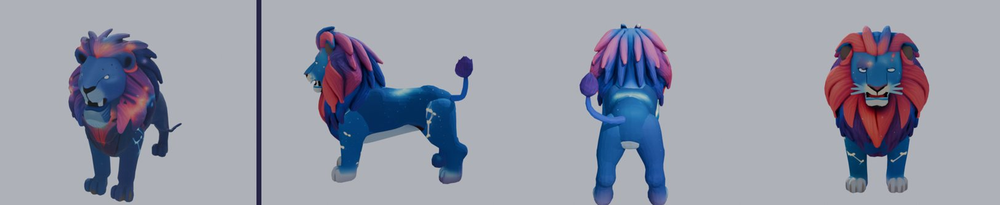
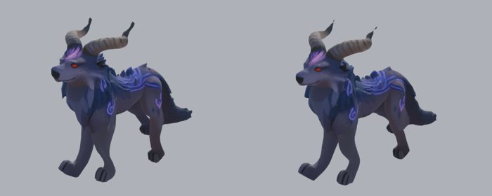
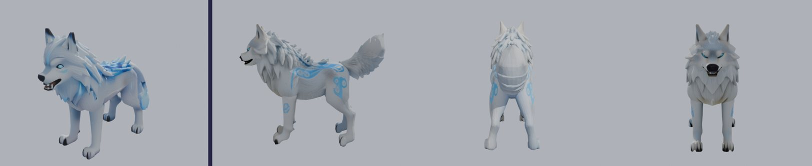
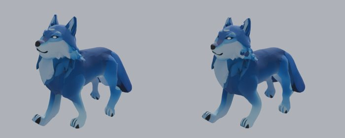
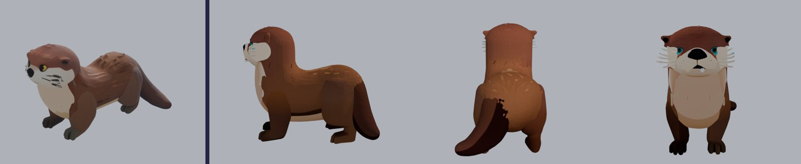
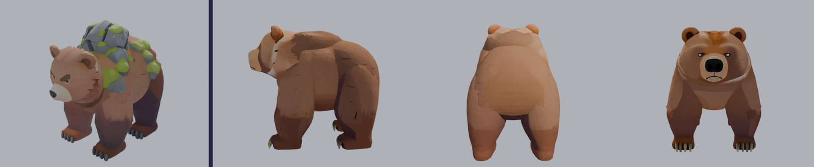
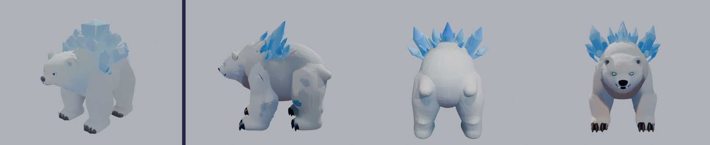
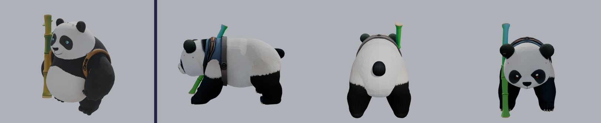
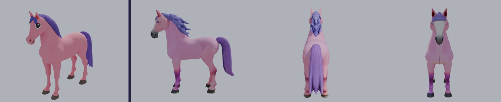
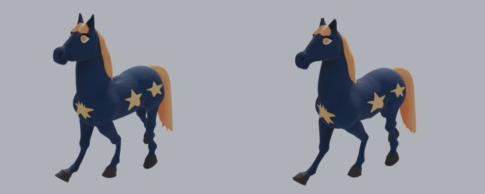
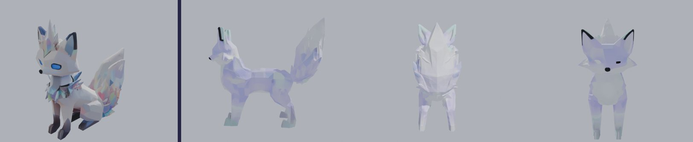
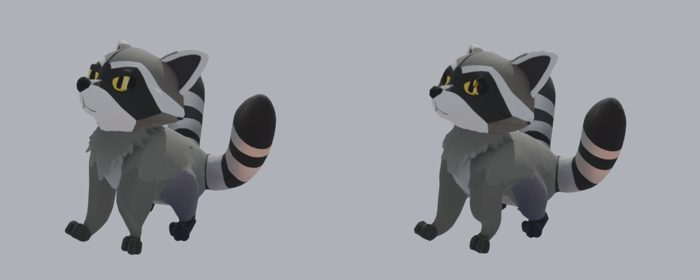

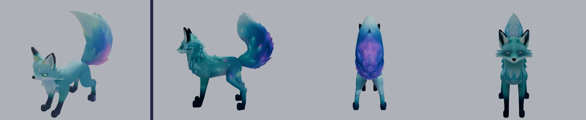
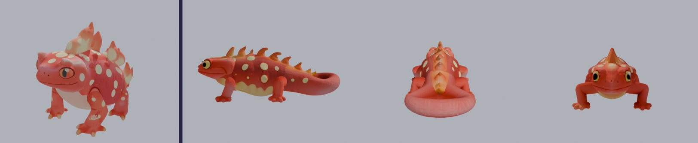
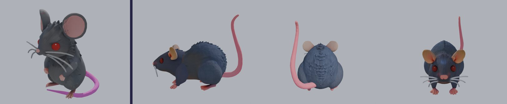
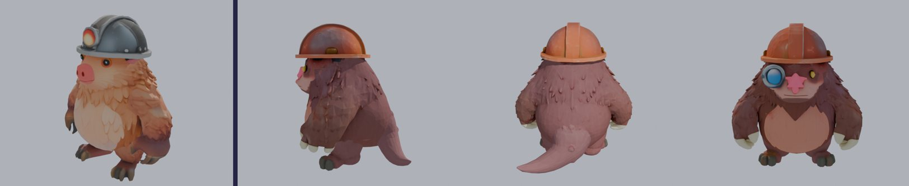
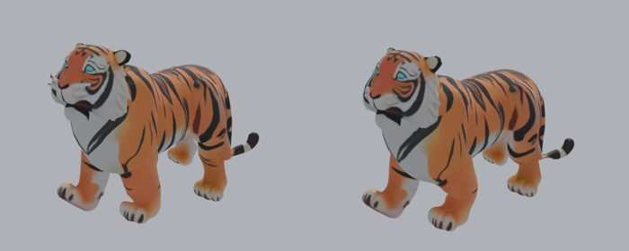
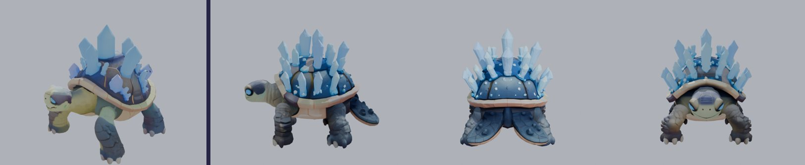
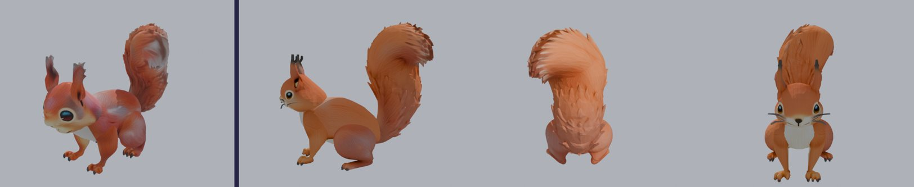